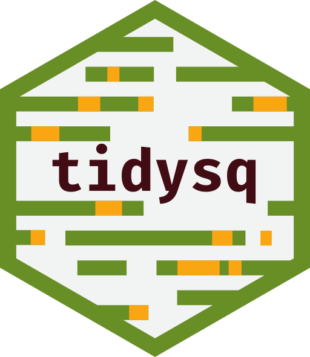

tidysq 
Overview
tidysq contains tools for analysis and manipulation of biological sequences (including amino acid and nucleic acid – e.g. RNA, DNA – sequences). Two major features of this package are:
effective compression of sequence data, allowing to fit larger datasets in R,
compatibility with most of
tidyverseuniverse, especiallydplyrandvctrspackages, making analyses tidier.
Getting started
Try our quick start vignette or our exhaustive documentation.
Installation
The easiest way to install tidysq package is to download its latest version from CRAN repository:
install.packages("tidysq")Alternatively, it is possible to download the development version directly from GitHub repository:
# install.packages("devtools")
devtools::install_github("BioGenies/tidysq")Example usage
file <- system.file("examples", "example_aa.fasta", package = "tidysq")
sqibble <- read_fasta(file)
sqibble
#> # A tibble: 421 x 2
#> sq name
#> <ami_bsc> <chr>
#> 1 PGGGKVQIV <13> AMY1|K19|T-Protein (Tau)
#> 2 NLKHQPGGG <43> AMY9|K19Gluc41|T-Protein (Tau)
#> 3 NLKHQPGGG <19> AMY14|K19Gluc782|T-Protein (Tau)
#> 4 GKVQIVYK <8> AMY17|PHF8|T-Protein (Tau)
#> 5 VQIVYK <6> AMY18|PHF6|T-Protein (Tau)
#> 6 DAEFRHDSG <40> AMY22|Whole|Amyloid beta A4 peptide
#> 7 VPHQKLVFF <15> AMY23|HABP1|Amyloid beta A4 peptide
#> 8 VHPQKLVFF <15> AMY24|HABP2|Amyloid beta A4 peptide
#> 9 VHHPKLVFF <15> AMY25|HABP3|Amyloid beta A4 peptide
#> 10 VHHQPLVFF <15> AMY26|HABP4|Amyloid beta A4 peptide
#> # … with 411 more rows
sq_ami <- sqibble$sq
sq_ami
#> basic amino acid sequences list:
#> [1] PGGGKVQIVYKPV <13>
#> [2] NLKHQPGGGKVQIVYKPVDLSKVTSKCGSLGNIHHKPGGGQVE <43>
#> [3] NLKHQPGGGKVQIVYKEVD <19>
#> [4] GKVQIVYK <8>
#> [5] VQIVYK <6>
#> [6] DAEFRHDSGYEVHHQKLVFFAEDVGSNKGAIIGLMVGGVV <40>
#> [7] VPHQKLVFFAEDVGS <15>
#> [8] VHPQKLVFFAEDVGS <15>
#> [9] VHHPKLVFFAEDVGS <15>
#> [10] VHHQPLVFFAEDVGS <15>
#> printed 10 out of 421
# Subsequences can be extracted with bite()
bite(sq_ami, 5:10)
#> Warning in CPP_bite(x, indices, NA_letter, on_warning): some sequences are
#> subsetted with index bigger than length - NA introduced
#> basic amino acid sequences list:
#> [1] KVQIVY <6>
#> [2] QPGGGK <6>
#> [3] QPGGGK <6>
#> [4] IVYK!! <6>
#> [5] YK!!!! <6>
#> [6] RHDSGY <6>
#> [7] KLVFFA <6>
#> [8] KLVFFA <6>
#> [9] KLVFFA <6>
#> [10] PLVFFA <6>
#> printed 10 out of 421
# There are also more traditional functions
reverse(sq_ami)
#> basic amino acid sequences list:
#> [1] VPKYVIQVKGGGP <13>
#> [2] EVQGGGPKHHINGLSGCKSTVKSLDVPKYVIQVKGGGPQHKLN <43>
#> [3] DVEKYVIQVKGGGPQHKLN <19>
#> [4] KYVIQVKG <8>
#> [5] KYVIQV <6>
#> [6] VVGGVMLGIIAGKNSGVDEAFFVLKQHHVEYGSDHRFEAD <40>
#> [7] SGVDEAFFVLKQHPV <15>
#> [8] SGVDEAFFVLKQPHV <15>
#> [9] SGVDEAFFVLKPHHV <15>
#> [10] SGVDEAFFVLPQHHV <15>
#> printed 10 out of 421
# find_motifs() returns a whole tibble of useful informations
find_motifs(sqibble$sq, sqibble$name, "^VHX")
#> # A tibble: 9 x 5
#> names found sought start end
#> <chr> <ami_bsc> <chr> <int> <int>
#> 1 AMY24|HABP2|Amyloid beta A4 peptide VHP <3> ^VHX 1 3
#> 2 AMY25|HABP3|Amyloid beta A4 peptide VHH <3> ^VHX 1 3
#> 3 AMY26|HABP4|Amyloid beta A4 peptide VHH <3> ^VHX 1 3
#> 4 AMY34|HABP12|Amyloid beta A4 peptide VHH <3> ^VHX 1 3
#> 5 AMY35|HABP13|Amyloid beta A4 peptide VHH <3> ^VHX 1 3
#> 6 AMY36|HABP14|Amyloid beta A4 peptide VHH <3> ^VHX 1 3
#> 7 AMY38|HABP16|Amyloid beta A4 peptide VHH <3> ^VHX 1 3
#> 8 AMY43|AB5|Amyloid beta A4 peptide VHH <3> ^VHX 1 3
#> 9 AMY195|86-95|Prion protein (human) VHD <3> ^VHX 1 3An example of dplyr integration:
library(dplyr)
# tidysq integrates well with dplyr verbs
sqibble %>%
filter(sq %has% "VFF") %>%
mutate(length = get_sq_lengths(sq))
#> # A tibble: 24 x 3
#> sq name length
#> <ami_bsc> <chr> <dbl>
#> 1 DAEFRHDSG <40> AMY22|Whole|Amyloid beta A4 peptide 40
#> 2 VPHQKLVFF <15> AMY23|HABP1|Amyloid beta A4 peptide 15
#> 3 VHPQKLVFF <15> AMY24|HABP2|Amyloid beta A4 peptide 15
#> 4 VHHPKLVFF <15> AMY25|HABP3|Amyloid beta A4 peptide 15
#> 5 VHHQPLVFF <15> AMY26|HABP4|Amyloid beta A4 peptide 15
#> 6 KKLVFFPED <9> AMY32|HABP10|Amyloid beta A4 peptide 9
#> 7 VHHQEKLVF <16> AMY34|HABP12|Amyloid beta A4 peptide 16
#> 8 VHHQEKLVF <16> AMY35|HABP13|Amyloid beta A4 peptide 16
#> 9 VHHQEKLVF <16> AMY36|HABP14|Amyloid beta A4 peptide 16
#> 10 KKLVFFAED <9> AMY37|HABP15|Amyloid beta A4 peptide 9
#> # … with 14 more rowsCitation
For citation type:
citation("tidysq")or use:
Michal Burdukiewicz, Dominik Rafacz, Mateusz Bakala, Jadwiga Slowik, Weronika Puchala, Filip Pietluch, Katarzyna Sidorczuk, Stefan Roediger and Leon Eyrich Jessen (2021). tidysq: Tidy Processing and Analysis of Biological Sequences. R package version 1.1.0.